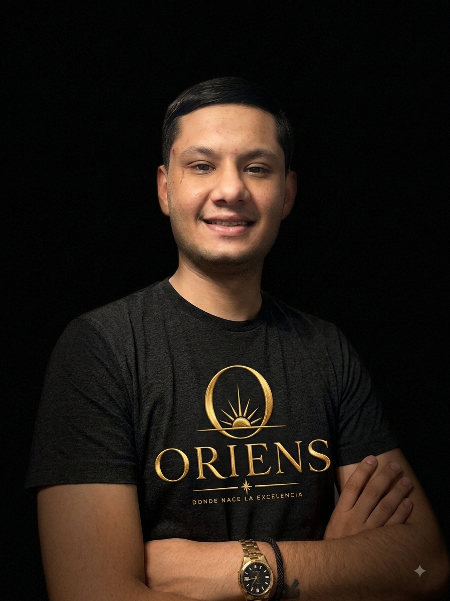

Donde nace la excelencia
Oriens nace de la pasión por el buen vino y el deseo de compartir esa pasión con quienes, como nosotros, entienden que cada copa cuenta una historia. No buscamos vender simplemente vino — buscamos acercarte una selección curada con criterio propio, etiqueta por etiqueta, para que cada elección tenga sentido.
Cada vino que forma parte de Oriens fue elegido a mano, priorizando calidad sobre cantidad.
Sin intermediarios ni procesos fríos: hablás directo con nosotros por WhatsApp, de persona a persona.
Desde la selección hasta la entrega, cuidamos cada detalle para que la experiencia esté a la altura del vino.

Fundador de Oriens. Entre dos mundos desde siempre, encontró en el vino un punto de encuentro: la precisión y el estándar que trajo de afuera, unidos a la calidez y la tierra de Salta. Oriens es esa mezcla — una vinoteca pensada para quienes buscan lo mismo que él: excelencia, sin perder la cercanía.